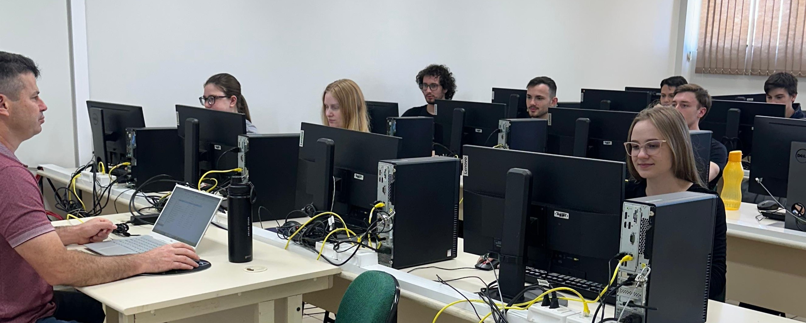
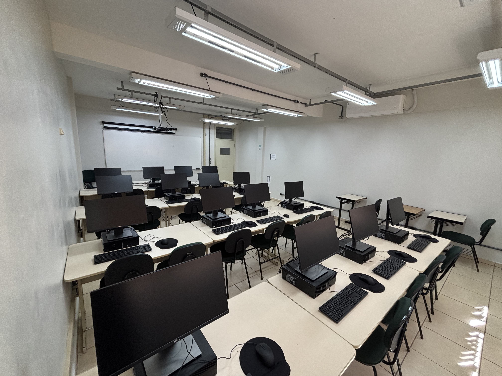
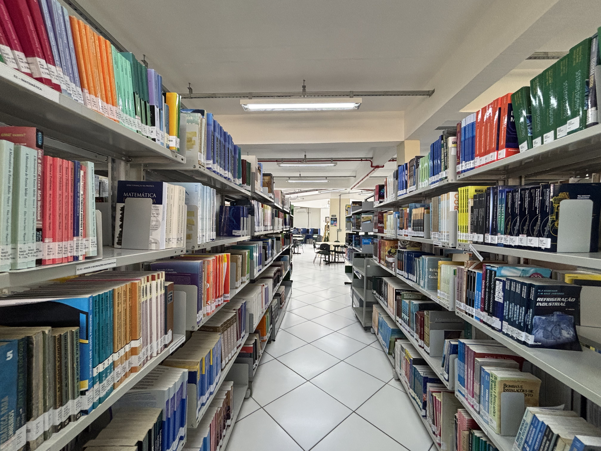
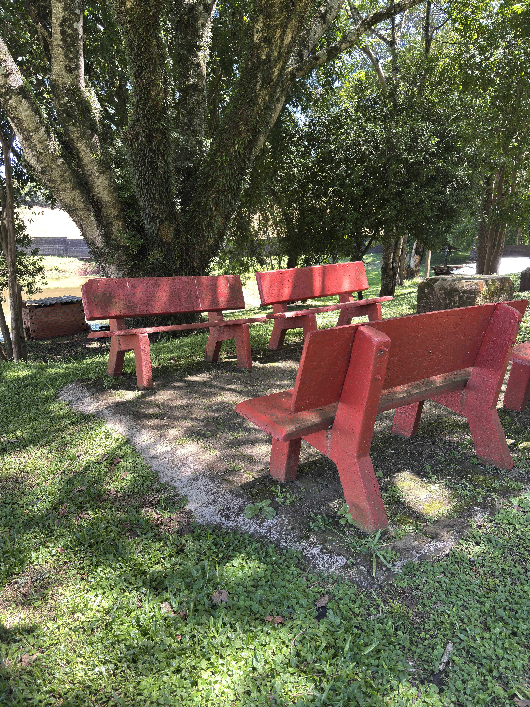

Ciência da Computação
Dê vida às suas ideias e construa o futuro com o curso de Ciência da Computação do IFSul.
Inscrições encerradas Saiba mais
Torne-se um Profissional Inovador em Tecnologia
Formação completa para atuar na criação, análise e evolução de soluções computacionais
O curso de Bacharelado em Ciência da Computação do IFSul – Câmpus Passo Fundo forma profissionais com uma sólida base teórica e prática, preparados para enfrentar os desafios da transformação digital e da inovação tecnológica.
Desde sua implantação, o curso tem o objetivo de capacitar profissionais capazes de projetar, desenvolver e gerenciar sistemas computacionais, atuando em áreas como desenvolvimento de software, inteligência artificial, ciência de dados, segurança da informação e redes de computadores.
Com uma formação que une fundamentos da computação, pesquisa aplicada e prática profissional, o egresso estará apto a atuar no mercado de tecnologia, em empresas públicas ou privadas, ou ainda seguir carreira acadêmica, contribuindo para o avanço da ciência e da inovação no país.
Prepare-se para construir o futuro da tecnologia e transformar ideias em soluções inteligentes.
Por que escolher o IFSul?
Infraestrutura Completa
Laboratórios modernos e equipados com tecnologia de ponta para práticas e desenvolvimento de projetos.
Professores Qualificados
Corpo docente formado por mestres e doutores com vasta experiência profissional e acadêmica.
Preparação para o Mercado
Formação alinhada com as demandas do mercado, preparando profissionais prontos para atuar.
Conheça Nossa Infraestrutura
Espaços modernos e equipados para sua formação profissional

Laboratório de Informática
Equipamentos de última geração para práticas e desenvolvimento

Salas de Aula Modernas
Ambientes climatizados e equipados com recursos multimídia

Biblioteca
Amplo acervo técnico e espaços de estudo

Áreas de Convivência
Espaços para integração e descanso
Pronto para começar sua jornada?
Faça parte do IFSul e transforme seu futuro profissional
Inscrições Encerradas. Período de inscrição para o próximo semestre será divulgado em breve.
Processos Seletivos
Acesse todos os documentos importantes e resultados dos processos seletivos
Resultados de Processos Seletivos
Confira a lista dos candidatos aprovados no primeiro processo
Ver resultadoPerguntas Frequentes
Tire suas dúvidas sobre o curso e o processo seletivo
Com o objetivo de democratizar o acesso, a cada processo seletivo são destinadas vagas conforme a legislação de cotas e ações afirmativas: Acesso Universal (Ampla Concorrência): 50% das vagas são destinadas ao acesso universal, e ações Afirmativas/Cotas (50% restantes): São reservadas vagas para candidatos que tenham cursado integralmente o ensino médio em escolas públicas (Lei nº 12.711/2012).
Além das modalidades principais, a Organização Didática do IFSul prevê outros dispositivos de ingresso por meio de editais específicos, desde que existam vagas disponíveis, como: Transferência Externa: Processo de seleção para estudantes regularmente matriculados em outras instituições nacionais (públicas ou privadas) credenciadas pelo MEC.